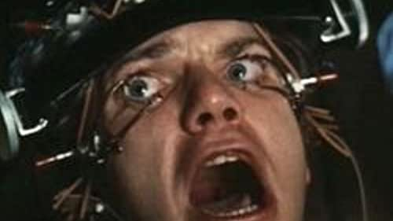

merhaba ben emirhan türkmen, bursa da yaşıyorum. web geliştirme öğrenmeye çalışıyorum.
Boş
zamanlarımda kamp yapmayı ve oyun oynamayı severim falan filan.
fransız melodic death metal grubu.
A Clockwork Orange (1971) Stanley Kubrick

A Clockwork Orange: 1971 yılında Stanley Kubrick tarafından çekilmiştir.